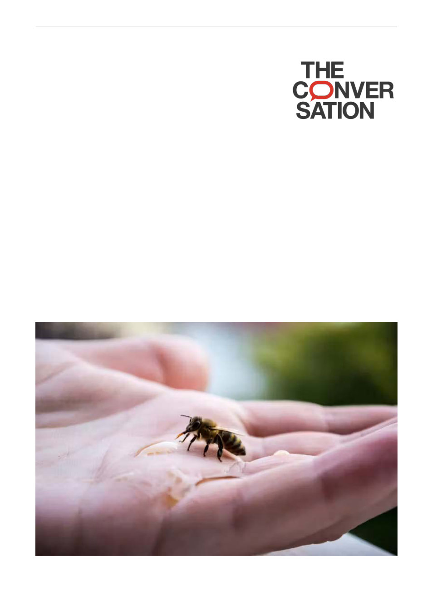

Over $100 million spent dealing with Varroa.
Here’s what we can do next
Fabian Kleiser/Unsplash Kate Mounsey, University of the Sunshine
Coast; Lucy R Miles, University of the Sunshine Coast; Robert J
Harvey, University of the Sunshine Coast, and Roy Barkan,
University of the Sunshine Coast
The honeybee mite, Varroa destructor, finally breached Australia’s biosecurity defences four years
ago, and is here to stay. Even more concerning, our standard treatments – such as specialised
pesticides – are already failing.
What does this mean for Australians, and what can we do about it?
Roughly the size of a pinhead, the parasitic mite is regarded as the most destructive pest of
honeybees worldwide. It feeds on bees, weakening colonies and causing their collapse.
For decades, Australia was the only continent free of the mite. That changed in 2022, when Varroa
was detected in sentinel hives at the Port of Newcastle, New South Wales.
An ambitious eradication campaign was launched, but abandoned by 2023. Today, Varroa is
established across much of Australia’s eastern and southern states. The focus has shifted from
eradication to management, and we now face a new threat – treatment-resistant mites.
Varroa is more than just a beekeeping problem. Managed honeybees underpin a significant portion
of Australian agriculture, contributing about A$14 billion annually. More than 30% of food
production depends on pollination from bees. When bee colonies collapse, the effects ripple
through food production, farm profitability and ultimately food prices.
Native pollinators also play an important role, but they cannot fully replace managed honeybees
for many large-scale crops.